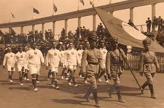

Brasil nas Olímpiadas
Em 1924, por falta de verba da União e desistência da CBD, por pouco o Brasil não fica de fora dos Jogos olímpicos em Paris situação que foi contornada graças a iniciativa dos esportistas de São Paulo, chefiados pelo jornalista Américo Neto, do Jornal O Estado de São Paulo e com apoio da Federação Paulista de Atletismo. Com delegação reduzida de somente 11 atletas homens, o Brasil participou das provas de Tiro, Atletismo e Remo. Em 1932, nos Jogos Olímpicos em Los Angeles o Brasil enviou 82 atletas de navio para os Jogos, chegando lá, os mesmos precisavam pagar um dólar para poder desembarcar, fato que acabou acarretando com a participação de 59 atletas. Somente os com maiores chances de êxito puderam competir, entre eles a primeira mulher brasileira a participar dos Jogos Olímpicos. Nesses Jogos o Brasil participou nas modalidades Polo Aquático, Natação, Tiro, Remo e Atletismo.
A estreia brasileira em Olimpíadas aconteceu nos Jogos de Antuérpia-1920. Foi na cidade belga que o Brasil também ganhou sua primeira medalha, e logo a de ouro, feito conseguido no tiro ao alvo por Guilherme Paraense, um tenente do Exército. Com 154 medalhas em 18 esportes, é o país mais bem-sucedido da América do Sul nos Jogos. A trajetória do Brasil nas olimpíadas é marcada por altos e baixos, com o país participando de quase todas as edições dos Jogos Olímpicos desde sua primeira participação em 1920. Ao longo das épocas o Brasil tem mostrado constante evolução e o investimento em esportes ao longo das décadas.
